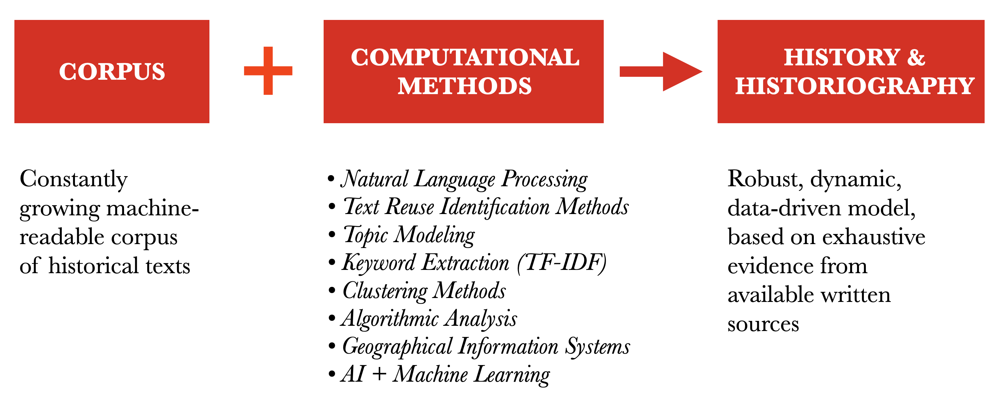

background-image: url(./images/eis1600_logo.png) background-size: contain class: center ??? project's logo --- background-image: url(./images/bg_default_2021_eis.png) background-size: contain class: center, middle ## **EIS1600**: Evolution of Islamic Societies (c. 600–1600 CE): Algorithmic Analysis into Social History ### *Emmy Noether Junior Research Group (2021-2027)* ⥈ Hamid Reza Hakimi, PhD Researcher (AIS)<br> Lisa Mischer, PhD Researcher (AIS *&* CS)<br> Tariq Yousef, CS Researcher (NLP, Deep Learning)<br> Maxim Romanov, Research Group Leader ⥈ Universität Hamburg <br> --- ### *funded by DFG within the Emmy Noether Programme* <img src="./images/dfg_website.png" alt="Drawing" style="width: 800px;"/> --- # Why? .large[ - **Arabic written tradition is vast and understudied** - _c._ 40,000 titles (reported in the bibliography _Hadiyaŧ al-ʿārifīn_) - _c._ 1,000,000 manuscripts in Iran alone ([scripts.nlai.ir](https://scripts.nlai.ir/)) - *we do not really know how many have been published* - _c._ 6,400 titles (_c._ 1 billion tokens) have been digitized ([OpenITI](https://github.com/OpenITI/)) ] --- # Why? .large[ - **historical and biographical texts** (*chronicles* and *biographical collections*)<br><br> - *low hundreds?* - _c._ 300 texts digitized - _c._ 100,000,000 words - _c._ 500,000 biographical records ] ??? - The tradition is particularly rich in chronicles and biographical collections; - These texts are often truly extensive. (Ibn Asakir ±9mln; Dhahabi - 3.3 mln; 2.9 mln; Mizzi - 2.6 mln) - They preserve massive amounts of information on historical processes that shaped and molded Islamic societies. - They are crucial for our understanding of this chapter in the history of the humanity. - Their numbers run into low hundreds - For the project that I am proposing I have collected some 300 texts - - a corpus of 100 million words - - 485 thousand biographical records --- # Why? .large[ - **historical and biographical texts** (*chronicles* and *biographical collections*)<br><br> - **_Potentially:_**:<br> we have information to produce a robust model of the development of the Islamic world - **_So far, unfortunately:_**<br> “our blessing and our curse”<br>— as Wadād al-Qāḍī put it ] ??? - **Unfortunately**: the very volume of this information so far has been both “our blessing and our curse”, as a leading Arabist put it - so far, it has been a real methodological “bottleneck” for our field. --- # Methodological Solution  ??? - My project offers a methodological solution that will allow us to study these sources holistically, and in an effective and reproducible manner. - At the heart of the project is a machine-readable corpus of Arabic texts and series of advanced computational methods of text analysis and data modeling. - I will be happy to give more details on the methods during the QA later - Together they are the key to discovering, evaluating, and modeling all relevant textual evidence at an unprecedented scale. --- class: center, middle # Chronology *&* Geography ## *corpus-driven and exploratory* --- background-image: url(./images/sources01.png ) background-size: contain class: center ## Chronology (*exploratory*) ??? The following graph shows how these 200+ texts with biographical information are distributed chronologically. Note: dates are in Islamic hijrī calendar; surrounded with red are texts written in the 11th century; to the right --- those that are written after --- background-image: url(./images/sources02.png ) background-size: contain class: center ## Chronology (*exploratory*) ??? The following graph shows how some 500,000 biographical records are distributed chronologically. Note: dates are in Islamic hijrī calendar; surrounded with red are biographies written in the 11th century (±55,000 biographies); to the right --- those that are written after (quite a significant part of those a biographies of individuals from the 11th century)** --- background-image: url(./images/geo1.png ) background-size: contain class: center ## Geography (*exploratory*) --- background-image: url(./images/geo2.png ) background-size: contain class: center ## Geography (*exploratory*) --- ## Approach to Textual Sources - the main focus is on *Minimal Units of Information*, e.g., descriptions of events from chronicles, and biographical records from biographical collections:<br><br> - *premise:* narratives are consciously constructed, while myriads of details scattered across vast texts simply cannot be subjected to the same level of agenda-driven editing; in large quantities, such agenda-resistant data is likely to provide more reliable historical evidence<br><br> - *MUI* will be aggregated into clusters of related historical information, which will be consequently studied<br><br> - Each primary source will be broken into such units and they all will be re-aggregated into *MasterChronicle*, which will serve as a unified research ecosystem for the project and its collaborators --- ## Research Methods .large[ - **first group:** text-mining methods for generating metadata layers that would allow grouping MUI into multiple clusters<br><br> - **second group:** modeling and analysis of extracted information<br><br> - **third group:** more traditional close-reading approaches to “important” clusters of information ] --- # Team - PhD Researcher: Hamid Reza Hakimi, Arabic and Islamic Studies - PhD Researcher: Lisa Mischer, Arabic and Islamic Studies *&* Computer Science - Students Assistant: Alena Rehder (data collection and organization tasks) - Postdoc Researcher: Tariq Yousef, Computer Science (NLP, Deep Learning, FE/BE Development) - PI (*Nachwuchsgruppenleiter*): Maxim Romanov --- exclude: true ## Research Areas (PI) .large[ - **Social Structure and Mobility** (PI)<br><br> - Compositions of Islamic society (*élites*) - Major social transformations - Cultural Geography and Mobility Patterns ] --- exclude: true ## Research Areas (PhD 1) .large[ - **Political Power and Conflict**<br><br> - Extent of political control - geographical and chronological dimensions - Patterns of interactions with local population ] --- exclude: true ## Research Areas (PhD 2) .large[ - **Environmental Change and Disasters**<br><br> - Climate change, plagues, floods, droughts, etc. - geographical and chronological dimensions - Their effect on local populations ] --- background-image: url(./images/team1.png ) background-size: contain class: left exclude: true ## Project --- background-image: url(./images/team2.png ) background-size: contain class: left exclude: true ## Project: *Research Areas* --- background-image: url(./images/team3.png ) background-size: contain class: left ## Project ??? - this slide contains all the information; the previous slides are excluded, since they are steps. --- # Broad Objectives .large[ - **PRI:** Historical-and-biographical - *Historical development of the Islamic world* <br><br> - **SEC:** Historiographical - *Understanding Historiographical tradition* - **SEC:** Methodological-and-educational - *Developing resources; Teaching; Building the field* ] --- # Broad Objectives .large[ - **SEC:** *Understanding Historiographical tradition*<br><br> 1. *Understanding “editions”* 2. *A Books and Its Sources* 3. *Pick and Choose* 4. *Scratch This, Add That* ] --- # Broad Objectives .large[ - **SEC:** *Methodological-and-educational* - *Developing resources* - MasterChronicle - A Longue Durée Atlas of Islam - Methodological Handbook - *Teaching* - Courses @ UHH - *Building the field* - A Workshop and Visits (10) ] --- background-image: url(./images/collaborations.png ) background-size: contain class: left ??? COLLABORATION